Weddings
Wedding Photography on HQS Wellington
7 September 2014
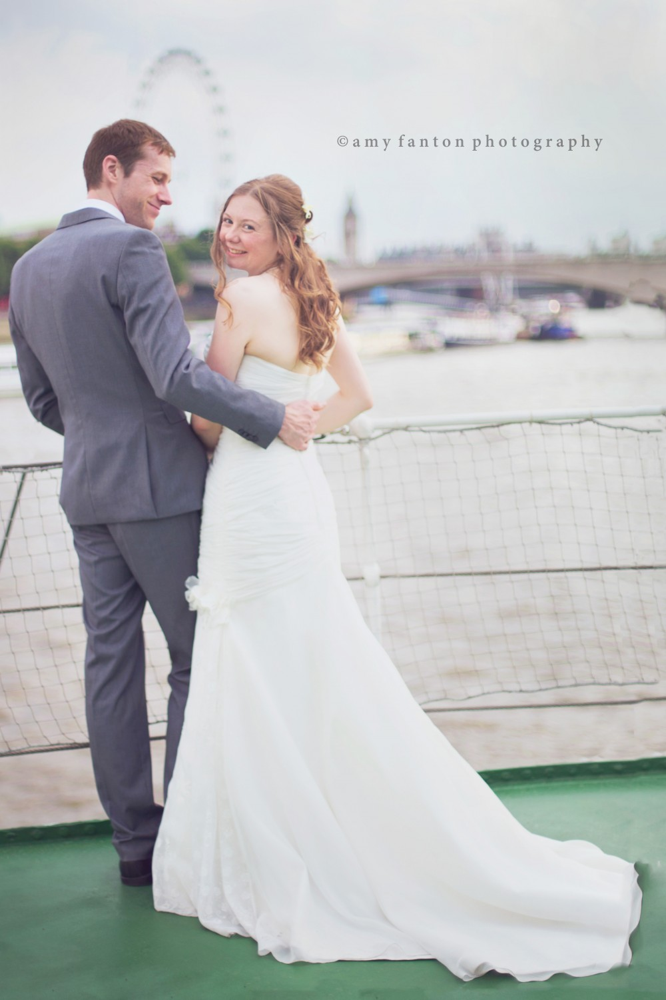
Earlier this summer I did some wedding photography aboard the HQS Wellington with fellow wedding photographer Dewan Demmer. It was a perfectly warm afternoon spent on the Thames with lovely views overlooking many of London’s most famous landmarks — the London Eye, Big Ben and several of London’s famous bridges.
Having grown up around boats my whole life, I was immediately drawn to all of the pretty nautical detail on the historic ship. My favorite part of the day was photographing the couple’s portraits, where I guided the couple for a few moments the way I normally would during an engagement photo session to get some really romantic images of the couple together.
Here are some of my favorite images from the bridal portrait session of the afternoon as well as some of the lovely details on board. Looking forward to doing some more wedding photography in just a couple of weeks!
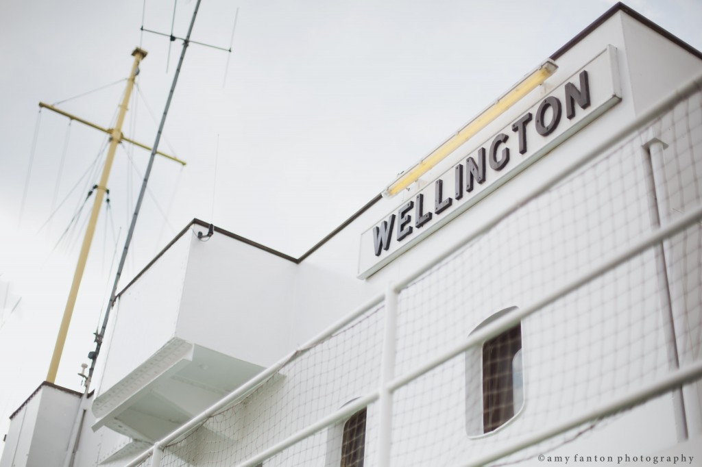
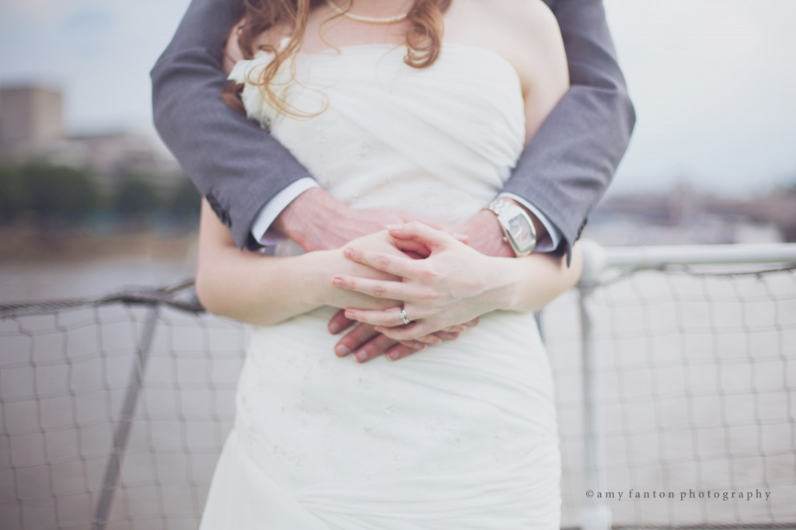
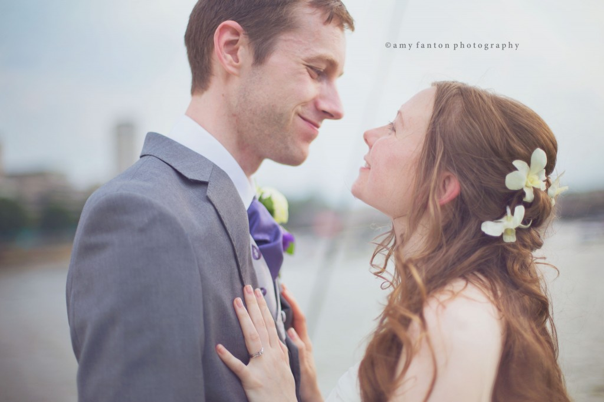
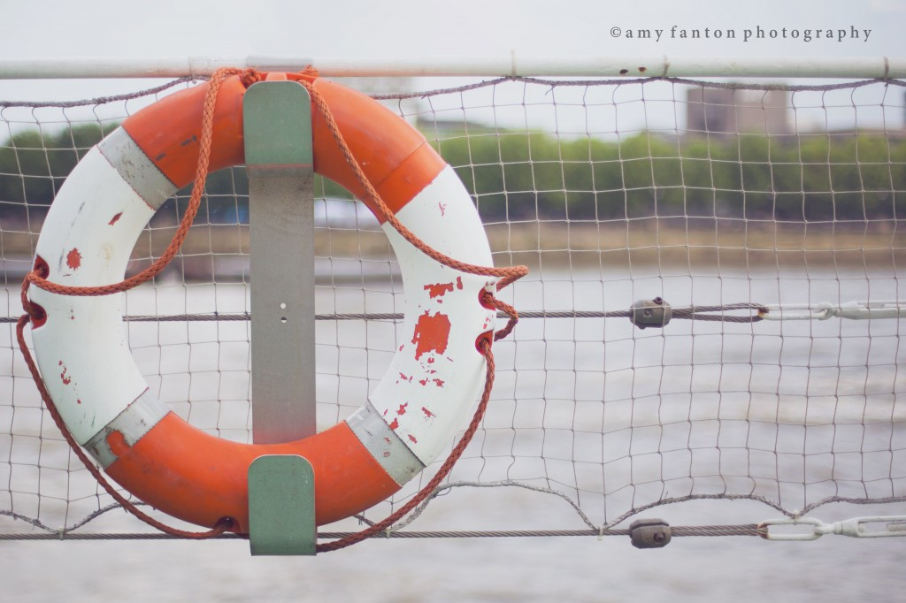
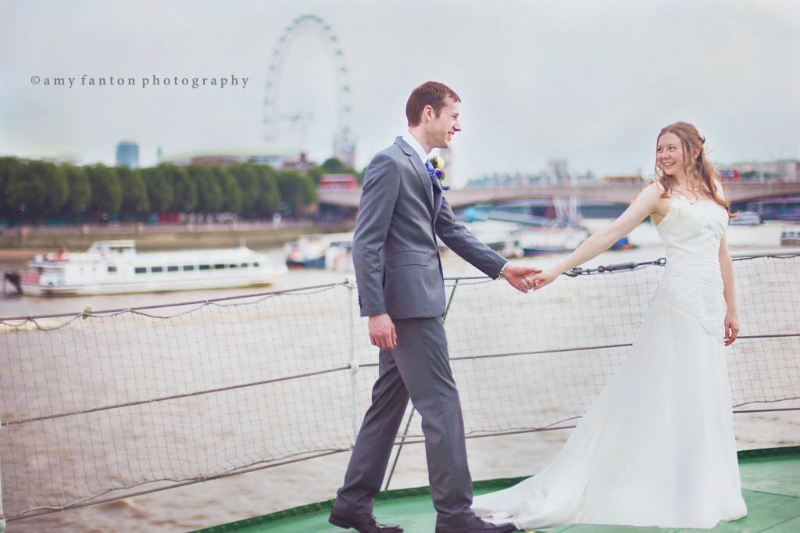
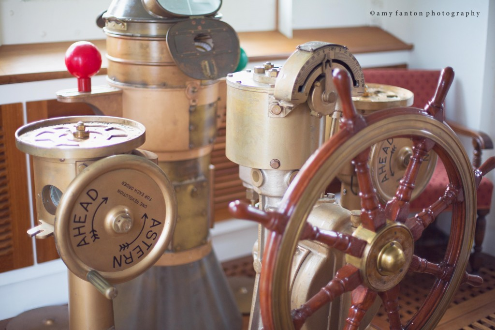
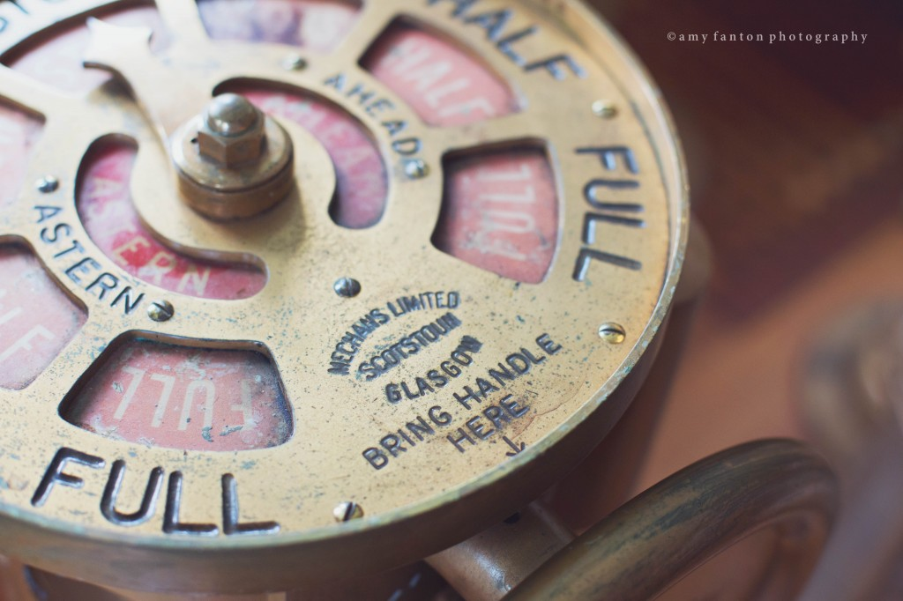
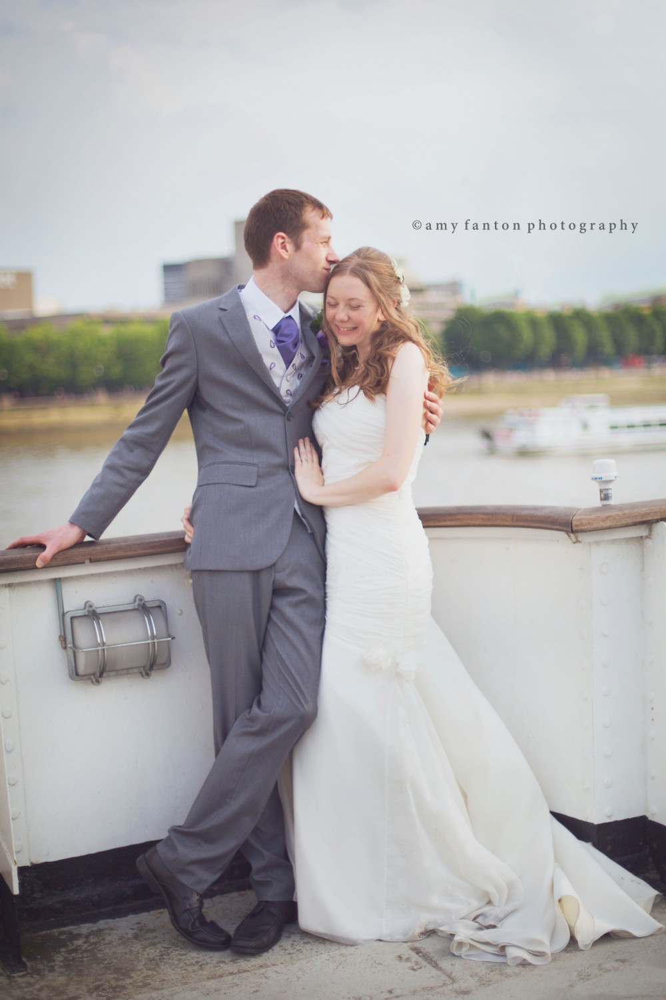
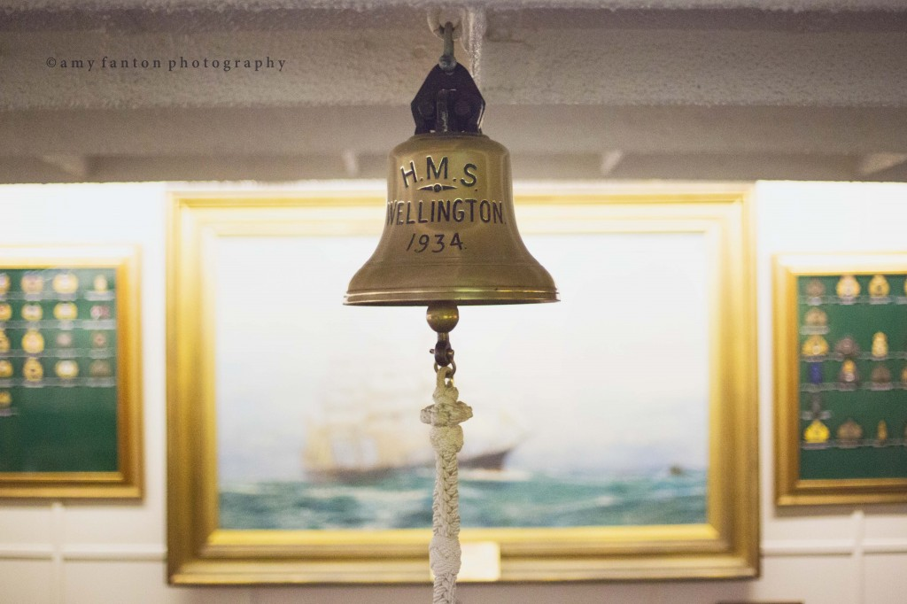
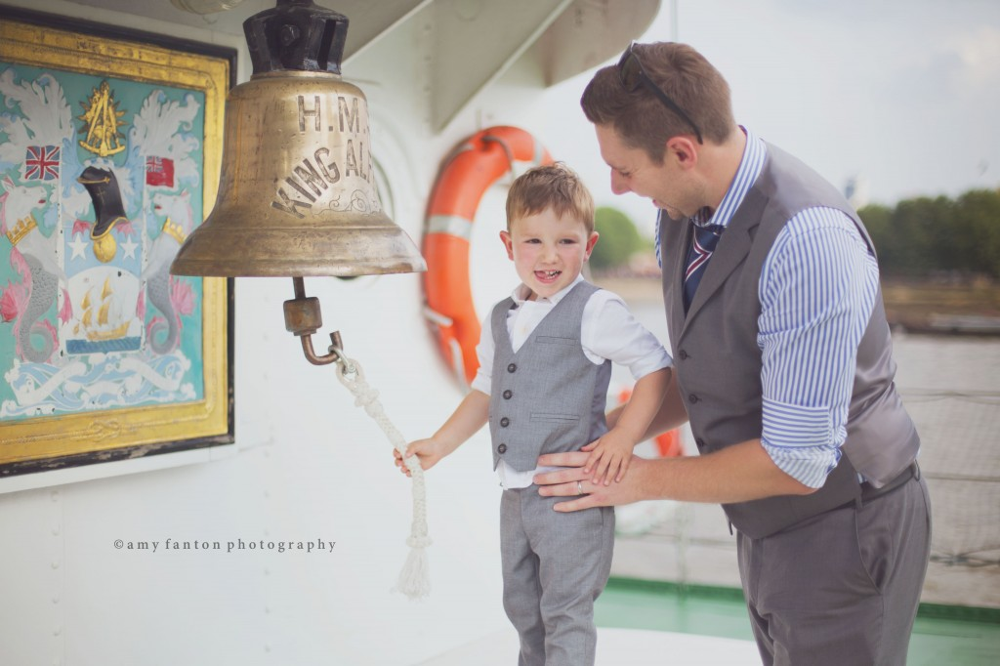
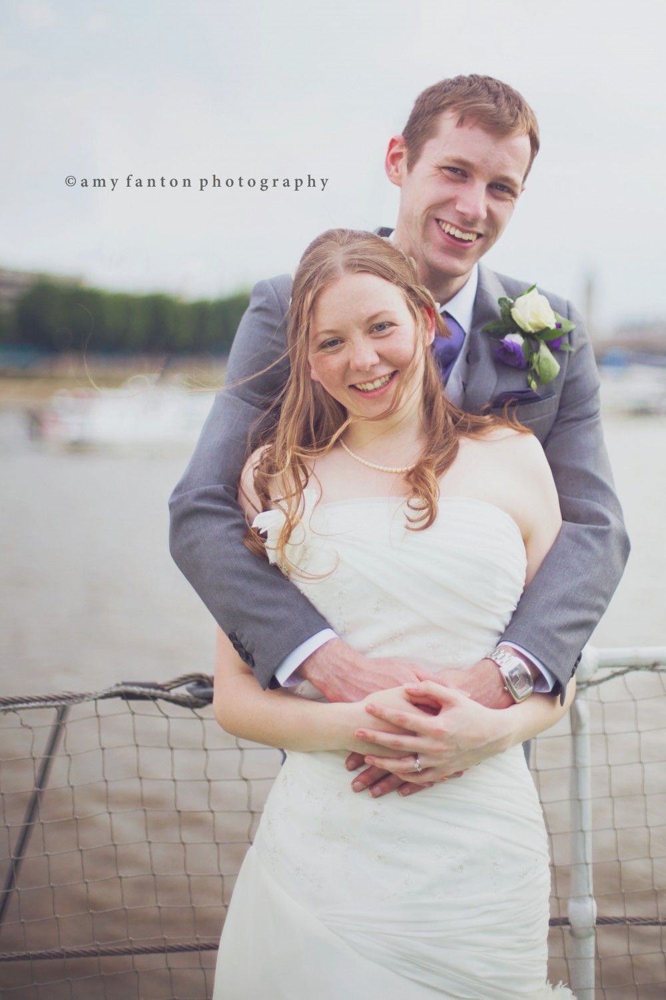